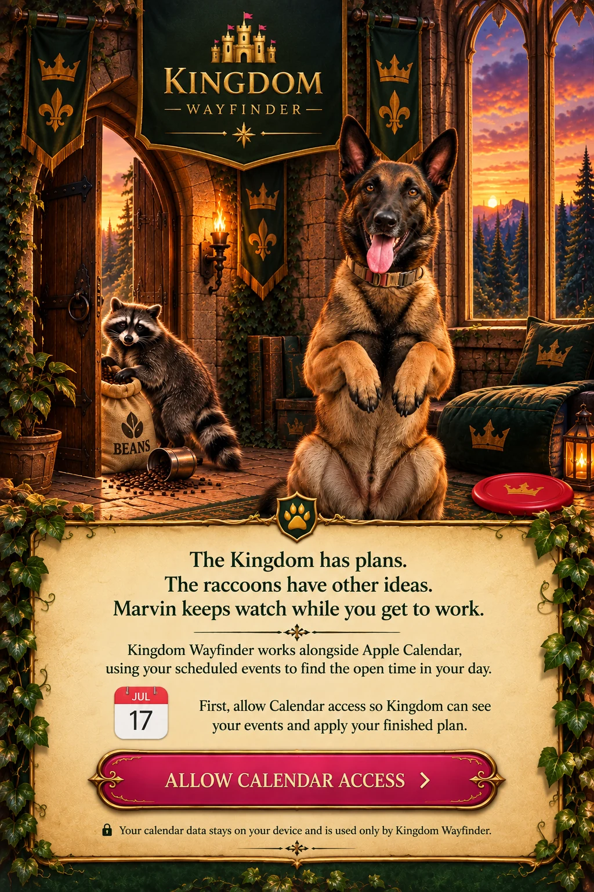
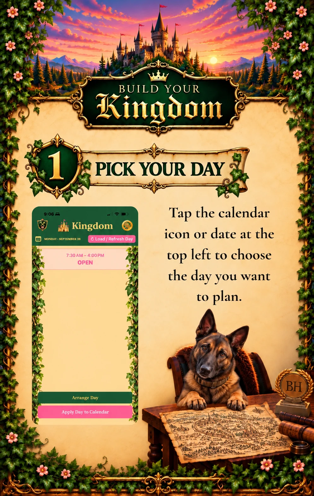
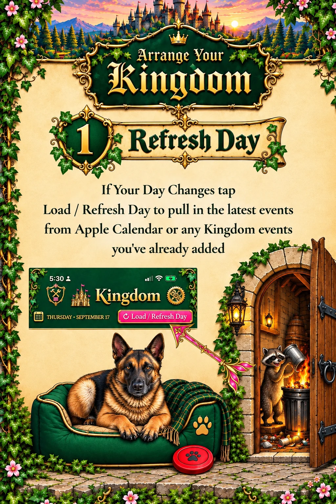

Enter the Kingdom
Connect to Apple Calendar and see the commitments already claiming space in your day. Your existing calendar remains part of the plan.
Appointments multiply. Priorities pile up. Your beautifully arranged schedule takes an unexpected detour. Fear not, weary planner. There is a way forward.
Enter the Kingdom ↓Need a Guide?Your calendar knows where you must be. Kingdom Wayfinder helps you figure out what can fit between those commitments — and what to do when the day refuses to cooperate. Plan with your Apple Calendar, choose your priorities, and arrange a day that makes sense.

Connect to Apple Calendar and see the commitments already claiming space in your day. Your existing calendar remains part of the plan.

Find open windows, choose reusable Kingdom Blocks, and give your work and routines a place on the schedule.

Plans changed? Move blocks, adjust their duration, review conflicts, and apply your plan to Apple Calendar when you're ready.
Kingdom doesn't replace your calendar or promise a miraculous thirty-seventh hour. It helps you use the hours you actually have. See what's fixed, find what's open, and decide what deserves a place there. When the unexpected arrives, you can adjust the plan instead of starting from scratch.
Kingdom Wayfinder for iPhone. Built for busy days, shifting plans, and the occasional suspicious raccoon.
Visit the Help Desk